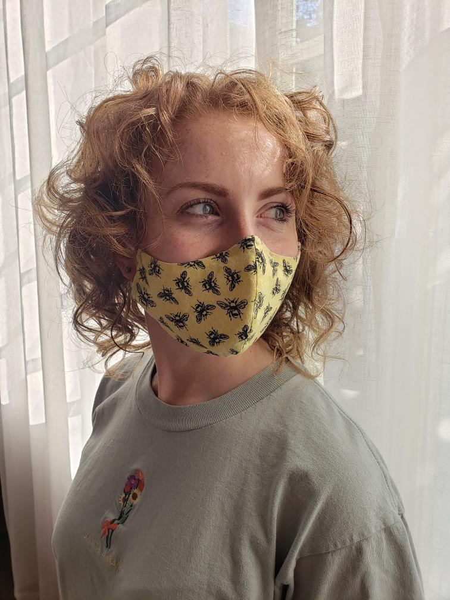
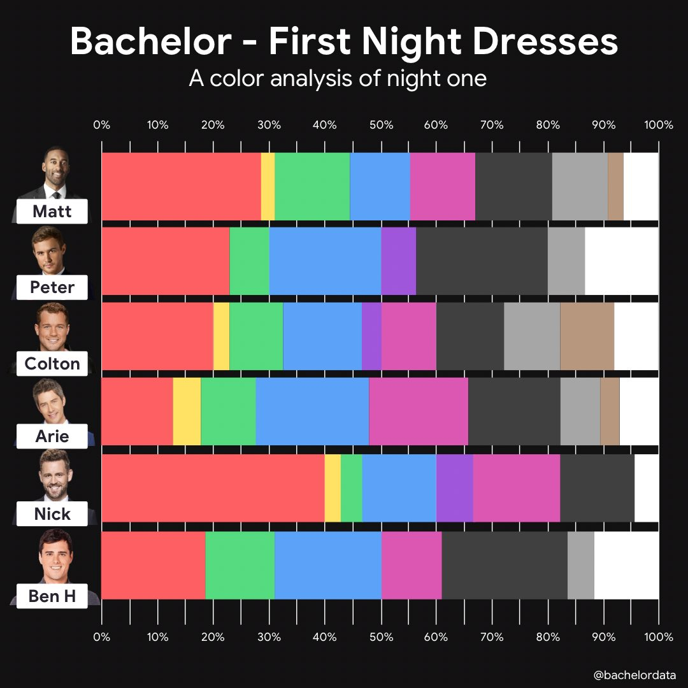
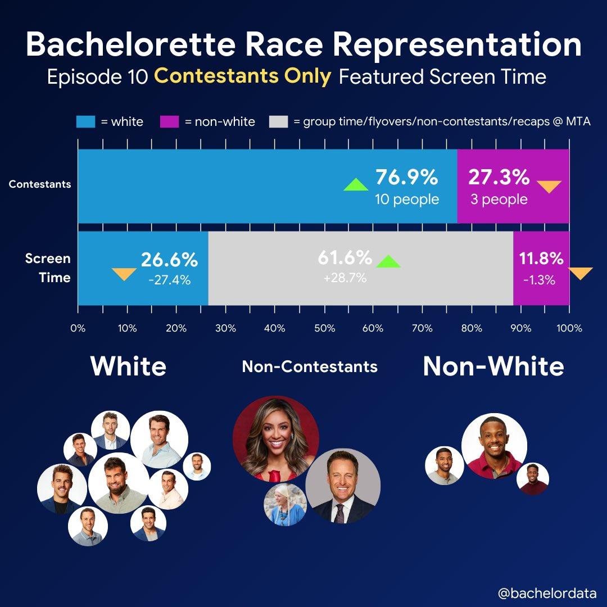

About me
Amanda Glatter
Lab Technician, B.S. Environmental Health

My background
I graduated from UGA in Spring of 2020 with my B.S. in Environmental Health and a minor in Spanish. I chose environmental health because it connected my mission for environmental protection with public health and social justice. Currently, I am a full time lab technician in Dr. Erin Lipp’s lab working on the Community Resistance in Athens Project focused on examining the carriage rates of multi-drug resistant E. coli. During my undergraduate experience, I studied abroad in Costa Rica, where conducted independent resesarch on environmental E. coli concentrations and gained a thorough background in ecology. Other experiences include volunteering in a lab at the Odum School of Ecology, founding Theta Nu Xi Multicultural Sorority, Inc., and interning at the Florida Department of Health and the Athens-Clarke County Water Conservation Office. I am in the process of applying to graduate school for a MPH in Epidemiology with a focus in infectious disease. My goal in graduate school is to gain the quantitative and analytical tools necessary to address global environmental health threats.
Statistical Experience and Goals
I have used Microsoft Excel to model data from my undergraduate research and I have used R to model preliminary findings for my current position in the Lipp Lab. I have taken a few Code Academy courses in R, but I would consider myself a beginner level R user. A few of my goals for this course are to learn how to approach modeling large datasets and running statistical analyses.
Interests and Hobbies
Outside of work and school, I enjoy:
- Yoga
- Listening to music and podcasts
- Cooking
- Playing guitar
- Volunteering for the Upper Oconee Watershed Network.
Fun Facts
I love theatre and I performed in several musicals in college. When I was younger, I did some voiceover acting for commercials and was very involved in the drama department at school.
Link
The Bachelor Analyst twitter account is an excellent representation of how data analysis can be used as a tool to enhance the viewing experience of the popular reality TV show, “The Bachelor.” @BachelorData shares beautiful analyses of the competition and episode breakdowns. In addition, this account sometimes identifies shortcomings of representation within the show. This account shows how data modeling can enhance experiences outside of academia and scientific research.


